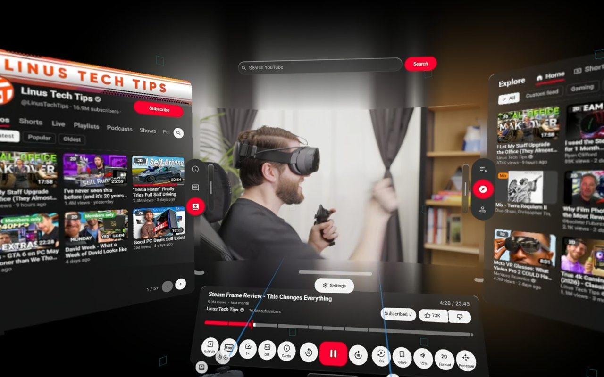
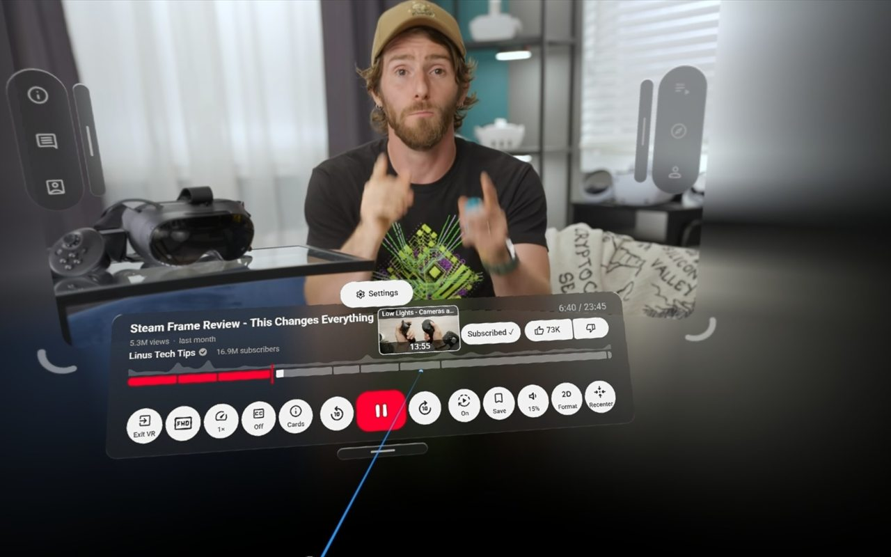
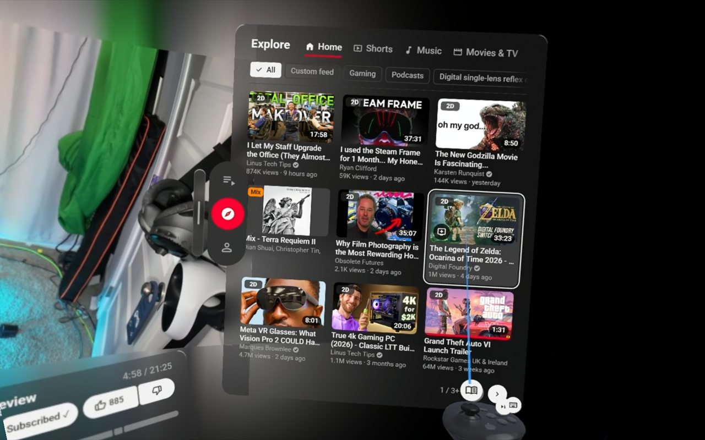
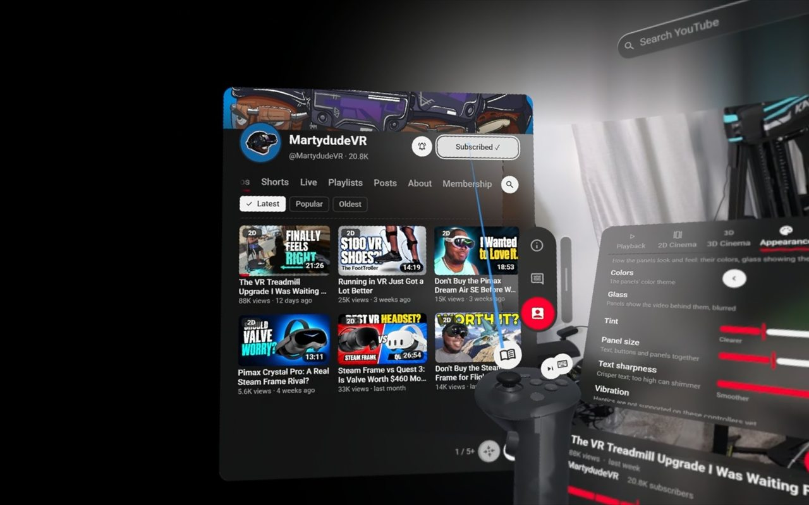
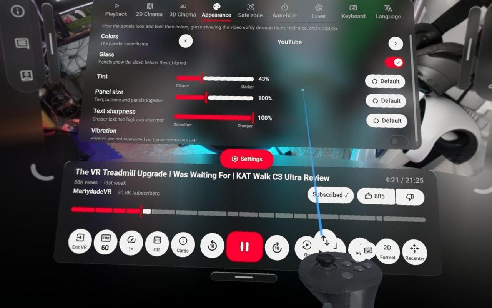

YouTube, all around you.
StreamXR is a free browser extension that plays YouTube in VR. 360° and VR180 videos wrap around you, everything else plays on a giant cinema screen, and you can browse, search, subscribe, like and comment without taking your headset off.
For the Valve Steam Frame and SteamVR headsets · Free and open source

Everything YouTube, made for VR
StreamXR draws YouTube's own player in your headset, and builds panels around it for everything else you'd do on the site.
Watch
- 360° and VR180 videos around you, detected automatically
- Regular videos on a cinema screen you can curve, resize and move
- 3D side-by-side and top-and-bottom videos in real 3D
- Every aspect ratio, ultrawide and IMAX included
- Quality up to 8K, captions, chapters and a seek preview
Browse without taking it off
- Panels around the video, never on top of it: Description, Comments, Channel, Up Next, Explore and your library
- Search with suggestions on a VR keyboard
- Comment, reply, subscribe, like and save to your playlists
- Live streams with live chat, Shorts, playlists and your queue
Comfortable in a headset
- Designed after Material 3 and Android XR's guidelines
- A safe zone that keeps the video clear, and smooth motion
- Passthrough on the Steam Frame: watch with your room around you
- Glass panels, themes, adjustable size and text sharpness
- In English and Spanish




Free, private and open source
A hobby project, made for VR fans, with nothing to sell.
Private by design
StreamXR only has access to youtube.com. It has no servers, no analytics and no tracking, and it collects nothing. Your settings stay in your browser.
Free and open source, forever
Every line is on GitHub under the MIT license. Bugs, ideas and translations are welcome as issues.
Still growing
More is on the way, including more sites like Twitch and your own Jellyfin and Plex servers. See what's planned on the roadmap.
Get started in a minute
Two ways to watch, both from the Chrome Web Store: right on the Steam Frame or on a Windows PC. Either way it's free, with no account beyond your own YouTube one (or none at all).
🥽 Right on the Steam Frame
StreamXR runs in the Frame's own Chromium browser, no PC needed. It needs SteamOS 0.5.7 or newer, which for now is a Beta, so set that up first.
First: switch to the SteamOS Beta
- Open the Frame's settings and go to System.
- Join the Beta: under Beta Participation, set System Update Channel to Beta.
- Install the update it offers, and let the Frame restart. Check that SteamOS is now 0.5.7 or newer.
Then: install StreamXR
- Install or update Chromium (VR needs version 157 or newer): open Discover, the Frame's app store, search for Chromium and press Install. Already have it? Open Discover's Updates page and update it there.
- Add StreamXR: in Chromium, open StreamXR on the Chrome Web Store, click Add to Chrome, then Add extension.
- Watch! On YouTube, click the 🥽 VR button (in the top bar next to + Create, or in a video's player), then Enter VR. It can take a second or two. The first time, choose Allow while visiting the site. 🍿
- Make the text sharp (recommended): while you're in VR, press the Steam button to open Chromium's VR video settings, and set the per-eye resolution to the highest value (3408). The default makes text look blurry.
Updates are automatic; after one, reload your YouTube tab. On the Frame's desktop, right-click is a click of the right stick (press it in).
🖥️ On a Windows PC
You'll need Windows 10 or 11, Google Chrome and SteamVR.
- Install: open StreamXR on the Chrome Web Store in Chrome, click Add to Chrome, then Add extension. The StreamXR Dashboard opens with a short welcome.
- Start SteamVR on your PC, and connect your headset to it.
- Steam Frame: in the headset, go to Streaming Status, find the PC that's running SteamVR, open the Advanced drop-down and pick Stream VR without game.
- Other headsets: connect them to SteamVR the way you usually do, with SteamVR set as your OpenXR runtime (SteamVR's settings → OpenXR → Set SteamVR as OpenXR Runtime).
- Restart Chrome if SteamVR started after it. Chrome only looks for a headset when it starts: if SteamVR wasn't running when you opened Chrome, close every Chrome window and open it again.
- Pin StreamXR to the toolbar: click the 🧩 puzzle icon at the top right of Chrome, then the 📌 pin next to StreamXR.
- Check your setup (optional): click StreamXR's button in the toolbar → Open StreamXR Dashboard → Test VR. If something's wrong, the Dashboard says what's most likely the problem.
- Watch! On YouTube, click the 🥽 VR button (in the top bar next to + Create, or in a video's player), then Enter VR. The first time, Chrome asks to use virtual reality devices: choose Allow while visiting the site. 🍿
Updates are automatic; after one, reload your YouTube tab. Want to skip ads from inside VR? Add the Skip Helper too. Stuck? See Quick troubleshooting.
Quick troubleshooting
The fixes for what comes up most. StreamXR's Dashboard (its toolbar button → Open StreamXR Dashboard → Test VR) also checks your setup and says what's most likely wrong.
🚫 "No VR headset found", or Enter VR is grayed out (PC)
Chrome only looks for a headset when it starts. Start SteamVR, connect your headset (Steam Frame: Streaming Status → your PC → Advanced → Stream VR without game), then close every Chrome window and open Chrome again.
🧩 Still "No VR headset found" with SteamVR running (PC)
Chrome reaches your headset through the OpenXR runtime, and other VR software (Quest Link, Virtual Desktop and others) can take it over. In SteamVR, open Settings → OpenXR and set SteamVR as the OpenXR runtime. Then quit Chrome fully: turn off Settings → System → Continue running background apps when Chrome is closed, close every window and open it again.
🧪 Not sure it's StreamXR? (PC)
With SteamVR running, open the WebXR samples in Chrome. If their Enter VR is grayed out too, Chrome can't see your headset on any site: it's your PC's VR setup (the two answers above, or the next one), not StreamXR.
🛠️ SteamVR says it's the OpenXR runtime, but nothing finds the headset (PC)
SteamVR's registration as the runtime can be broken even while its settings say it's set (often after other VR software was installed and removed). Reinstall SteamVR: in Steam's Library, right-click SteamVR → Manage → Uninstall, then install it again, and say yes when it asks to become the OpenXR runtime. Then quit Chrome fully and open it again.
🥽 No VR on the Steam Frame's own browser
VR there needs SteamOS 0.5.7 or newer (the Beta, for now) and Chromium 157 or newer: update Chromium on Discover's Updates page. Then close Chromium and open it again.
🔍 No VR button on YouTube
Make sure StreamXR is turned on in chrome://extensions, then reload the YouTube
tab.
🔄 StreamXR updated, but nothing changed
Reload your YouTube tab: an open tab keeps the old version until it's reloaded.
🪟 "Another tab is already in VR"
Chrome allows one VR session at a time. The popup names the tab that's in VR: click Exit VR there, then Enter VR again.
🌀 A video looks stretched, doubled or split into squares
Pick another format in the popup before entering VR, or with the Format button on the controls panel.
🔍 The text looks blurry
On the Steam Frame's own browser, press the Steam button while in VR and set the per-eye resolution to 3408. On a PC, raise SteamVR → Settings → Video → Render Resolution. Everywhere: Settings → Appearance → Text sharpness (too high can make it shimmer).
🫥 The panels are in the way, or out of reach
Press Grip (pointing at nothing) to recenter, or tune the Safe Zone in Settings.
⏩ The panel says "Skip on desktop"
That's normal without the optional Skip Helper: click Skip ad in the browser window, or install the helper.
♻️ Settings got into a weird state
Hold the right stick click for 3 seconds to reset everything to the defaults.
Still stuck? See the full troubleshooting guide, or report it on GitHub with your details (VR button → Details → Copy details).
Questions
The things people ask most.
How can I install the Skip Helper?
The Skip Helper is a tiny, optional second extension that lets you skip ads from inside VR.
YouTube only accepts a real click on its Skip button, and the only way an extension can make
one is Chrome's debugger permission, which comes with a scary-sounding warning.
So it lives in its own extension that does exactly one thing: press the Skip button you
asked for. YouTube Premium members don't need it; without it, everything
else works, and you click Skip ad in the browser window instead.
It isn't on the Chrome Web Store, so it's added by hand:
On a PC:
- Go to the latest release, scroll to Assets and click Source code (zip).
- Unzip it somewhere it can stay, like your Documents folder: right-click the zip → Extract All… (Chrome runs the helper from there, so don't delete it).
- In Chrome, go to
chrome://extensions, turn on Developer mode (top right), click Load unpacked and pick the skip-helper folder inside the unzipped folder.
On the Steam Frame:
- Open Konsole, the terminal app (it's in the app menu).
- Paste this line with Ctrl + Shift + V and press Enter.
It downloads StreamXR's files into a StreamXR folder in your
Downloads; leave it there.
mkdir -p ~/Downloads/StreamXR && curl -L https://github.com/FauxxYT/StreamXR/archive/refs/heads/main.tar.gz | tar -xz --strip-components=1 -C ~/Downloads/StreamXR - In Chromium, go to
chrome://extensions, turn on Developer mode (top right), click Load unpacked, then pick Downloads → StreamXR → skip-helper.
It shows up as a second extension, "StreamXR Skip Helper for YouTube". Nothing to set up: StreamXR finds it by itself. Each time it skips, Chrome shows a "started debugging this browser" bar for a moment; that's how the real click is made.
Is StreamXR really free?
Yes. No price, no ads, no paid features, no account. It's a hobby project, open source under the MIT license.
Which headsets does it work with?
It's built and tested on the Valve Steam Frame, either in its own browser or streamed from a PC. Users have also reported the Meta Quest 2 and the Pimax Crystal Light working through SteamVR, and other SteamVR headsets will likely work too.
Do I need YouTube Premium?
No. It works signed in or out. With Premium you get no ads and 1080p Premium; without it, the optional Skip Helper lets you skip ads from inside VR.
What about Netflix, HBO Max and other streaming services?
Their videos are copy-protected, and browsers don't allow protected video in VR yet. StreamXR is built to support them once that changes. Why they don't work yet.
Does it work in Firefox?
Not yet: desktop Firefox doesn't support WebXR, the web's VR support. A Firefox version will come once it does.
There's more on GitHub
StreamXR's GitHub page has everything else: the full guide with every control, troubleshooting, what's new in each version and the roadmap, plus the source code. It's also where to report a bug, suggest a feature or help translate.